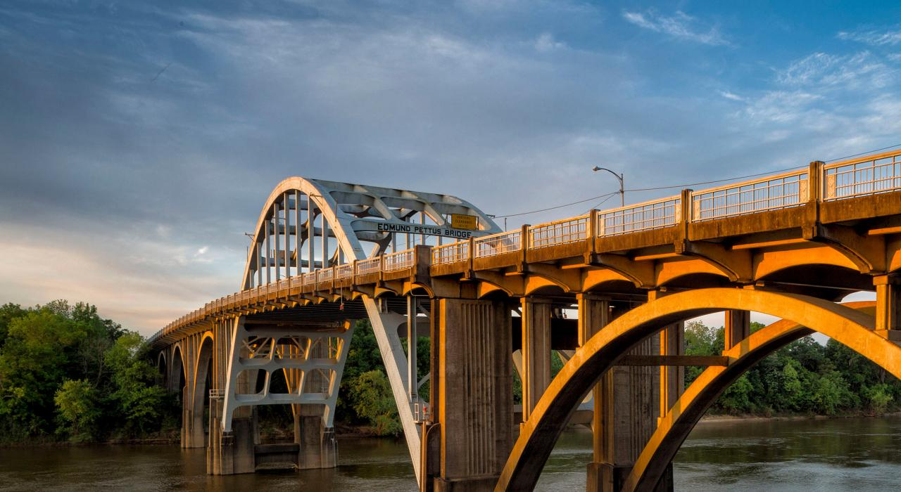

Home
Montgomery
Selma
Auburn
Learn More about Selma
Selma: Queen City of the Black Belt

Selma Facts:
Incorporated in 1820
Located in SouthCentral Alabama.
Population of 17,971
Average household income level is $29,656
Rural-Urban